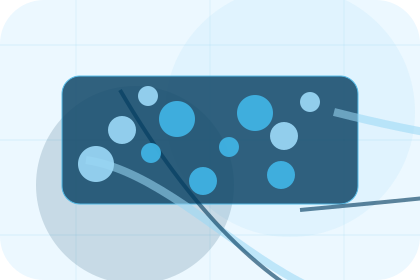
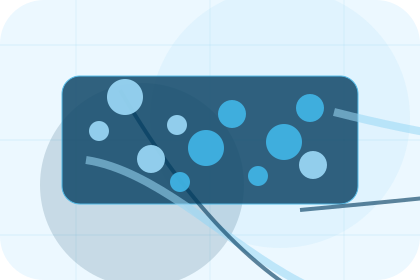
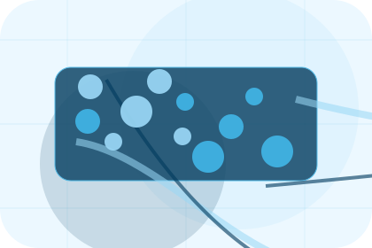
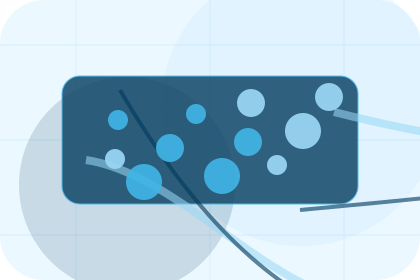
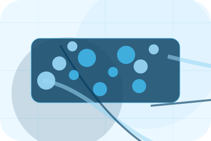
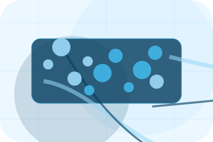
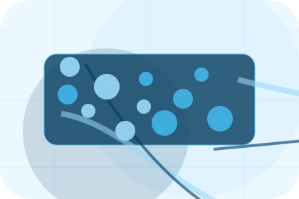
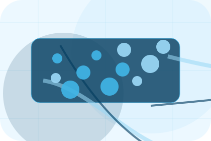
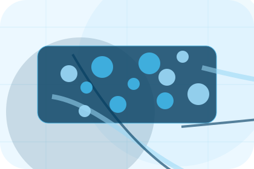
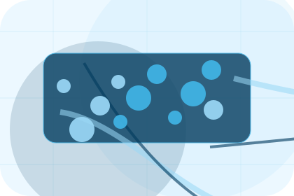

Company
Open the company route for experience, crew, certifications so maritime, shipping & marine services visitors can compare context, proof, and next steps.
Open CompanyHome / 01
Home opens as a clear maritime decision hub: what Port offers, who it helps, why it matters, and which route to take first.
The first screen combines positioning, proof, primary action, and fast internal navigation, so people can act immediately or compare the rest of the home route with context.
Shipping route hero
Select the closest route and Port keeps the next step, proof, and follow-up expectation aligned with cargo reliability and reach.

Site atlas
This homepage is the working index for maritime, shipping & marine services: it explains the offer, points to every deeper page, and keeps the final action visible without making the visitor hunt.
A shipping site with ocean-blue service panels, cargo quote logic, port schedules, and tracking proof. The page links problem, promise, services, process, proof, questions, support, legal routes, and conversion paths into one clear decision map.
Open the company route for experience, crew, certifications so maritime, shipping & marine services visitors can compare context, proof, and next steps.
Open CompanyOpen the services route for shipping, charter, repair so maritime, shipping & marine services visitors can compare context, proof, and next steps.
Open ServicesOpen the fleet route for vessels, capacity, routes so maritime, shipping & marine services visitors can compare context, proof, and next steps.
Open FleetOpen the ports route for locations, facilities, partners so maritime, shipping & marine services visitors can compare context, proof, and next steps.
Open PortsOpen the safety route for crew, vessel, cargo so maritime, shipping & marine services visitors can compare context, proof, and next steps.
Open SafetyOpen the tracking route for eta, documents, status so maritime, shipping & marine services visitors can compare context, proof, and next steps.
Open TrackingOpen the pricing route for cargo, route, level so maritime, shipping & marine services visitors can compare context, proof, and next steps.
Open PricingOpen the support route for claims, delays, documents so maritime, shipping & marine services visitors can compare context, proof, and next steps.
Open SupportOpen the contact route for cargo, vessel, port so maritime, shipping & marine services visitors can compare context, proof, and next steps.
Open ContactReview the local assets, icons, OG images, and static handoff materials used by Port.
Open Asset SystemUse the full sitemap to recover any route and verify the whole Port structure.
Open SitemapRead the privacy route before sending personal details through the static form.
Open PrivacyManage consent and understand the privacy-safe analytics approach.
Open CookiesHome / 02
Need frames the pressure behind the visit, then connects it to a practical path visitors can recognise and act on.
The copy avoids blame and panic. It shows the common friction, the practical consequence, and the calmer route Port uses to move people forward.
Open Company

Need names the real friction visitors bring to the home route, so the page feels relevant before any claim is made.
Home / 03
Capacity adds dark context to the home route, using the blue ocean logistics portal structure to support cargo reliability and reach before visitors choose a next step.
Port uses cargo service cards and focused copy to make the decision easier to scan, aligning the section with cargo reliability and reach rather than filling space.
Open ServicesCapacity gives the page a specific angle instead of repeating the navigation label.

The cargo service cards show what to compare, what to avoid, and what matters most for maritime, shipping & marine services visitors.

The final cue points to a useful internal route so the section keeps the journey moving.
Home / 04
Promise defines the better state Port is built to create, with enough detail to make the promise believable.
A shipping site with ocean-blue service panels, cargo quote logic, port schedules, and tracking proof. The section grounds that direction in concrete benefits, visible tradeoffs, and a next route visitors can use when the promise feels relevant.
Open FleetPromise defines what becomes clearer, easier, or safer when Port is the chosen route.
The benefit is tied to cargo reliability and reach, not a vague quality claim.
Visitors get a linked path to compare the promise against services, standards, or examples.
Home / 05
Services explains the practical scope, best-fit situations, and expected outcome so maritime visitors can compare options without decoding jargon.
The section keeps the offer concrete: what is included, who it is best for, what decision it supports, and which linked route gives the deeper detail.
Open ServicesWho should use services and when it belongs in the home journey.

The practical benefit visitors should expect after choosing this route.

Where to compare details, pricing, support, or contact options before committing.
Shipping route hero
Select the closest route and Port keeps the next step, proof, and follow-up expectation aligned with cargo reliability and reach.
Home / 06
Fleet explains the practical scope, best-fit situations, and expected outcome so maritime visitors can compare options without decoding jargon.
The section keeps the offer concrete: what is included, who it is best for, what decision it supports, and which linked route gives the deeper detail.
Open SafetyWho should use fleet and when it belongs in the home journey.
The practical benefit visitors should expect after choosing this route.
Where to compare details, pricing, support, or contact options before committing.
Home / 07
Ports adds dark context to the home route, using the blue ocean logistics portal structure to support cargo reliability and reach before visitors choose a next step.
Port uses cargo service cards and focused copy to make the decision easier to scan, aligning the section with cargo reliability and reach rather than filling space.
Open Tracking
Ports gives the page a specific angle instead of repeating the navigation label.
Home / 08
Tracking adds dark context to the home route, using the blue ocean logistics portal structure to support cargo reliability and reach before visitors choose a next step.
Port uses cargo service cards and focused copy to make the decision easier to scan, aligning the section with cargo reliability and reach rather than filling space.
Open PricingTracking gives the page a specific angle instead of repeating the navigation label.

The cargo service cards show what to compare, what to avoid, and what matters most for maritime, shipping & marine services visitors.

The final cue points to a useful internal route so the section keeps the journey moving.
Home / 09
Questions handles buying doubts directly so visitors can understand timing, fit, limits, and the safest next step.
Answers are short by design: enough to remove hesitation, not so much that the page turns into documentation before the visitor can act.
Open ContactQuestions gives the page a specific angle instead of repeating the navigation label.
The cargo service cards show what to compare, what to avoid, and what matters most for maritime, shipping & marine services visitors.

The final cue points to a useful internal route so the section keeps the journey moving.
Port starts with a focused intake so the recommendation matches the visitor's context, risk, timing, and readiness.
Each route explains inclusions, exclusions, documents, timing, and the decision points that affect final delivery.
The theme uses blue ocean logistics portal, cargo service cards, and vessel filter, port schedule, cargo quote form rather than a shared template rhythm.
Shipping route hero
Select the closest route and Port keeps the next step, proof, and follow-up expectation aligned with cargo reliability and reach.
Information is provided for planning and should be reviewed for the final client, location, and operating rules.
Home / 10
Port closes the home route with a clear action, a quick reminder of the value, and a low-friction way to request shipping.
Visitors who are ready can use the primary action. Visitors who are still comparing can scan the section links, proof, and support routes before they request shipping.
Request ShippingThe final block keeps the choice simple: act now, compare one more proof route, or send enough detail for a focused response.
Request Shippingcargo reliability and reach
A shipping site with ocean-blue service panels, cargo quote logic, port schedules, and tracking proof. Home ends with a direct path to request shipping, plus enough context for visitors who still need to compare.
 Request Shipping
Request Shipping